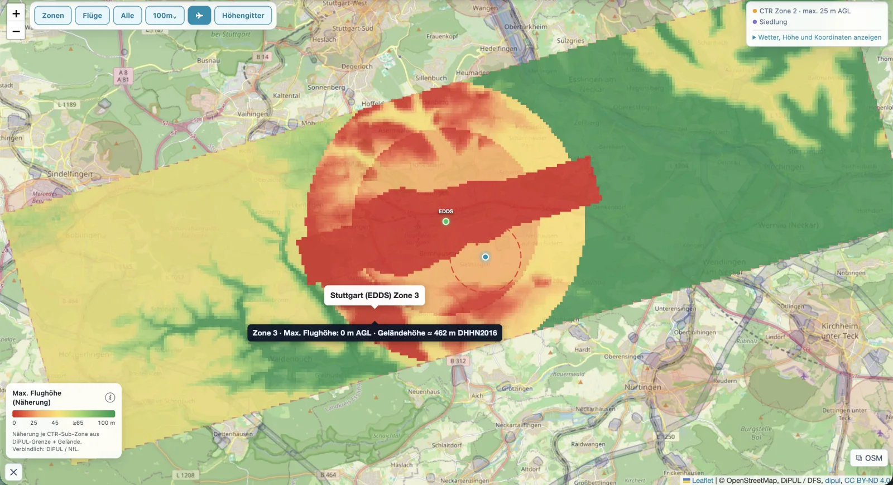

Maximal zulässige Flughöhen bei allgemeiner FVK-Freigabe nach NfL 2026-1-3960 (DFS) und 2026-1-3981 (DAS) (DFS-Info) (gültig seit 06.08.2026). Dieselben Höhen gelten in allen 24 CTR-D — 15 mit DFS-, 9 mit DAS-Flugplatzkontrolle. Die Deckel gelten relativ zur Flugplatzhöhe bzw. über Grund — je nachdem, welcher Wert je Zone maßgeblich ist.
🟢 Hindernisregel: Ein Hindernis (Funkmast, Windrad) öffnet lokal einen grünen Hüllraum bis Hindernishöhe + 15 m (± 30 m seitlich, schematisch) — auch dort, wo der Zonendeckel sonst 0 m wäre. Bei mehreren Hindernissen im Umkreis von 30 m zählt das höchste als Referenz. Nur in dieser Blase ist mehr erlaubt.
⚠ Keine Staffelung, keine Verkehrsinfo: Die Flugsicherung trennt UAS nicht von bemanntem oder anderem UAS-Verkehr (auch keine Wirbelschleppenstaffelung) und gibt Fernpiloten keine Verkehrsinformationen — die Kollisionsvermeidung liegt allein beim Fernpiloten (See-and-Avoid). Bemannter Verkehr erhält lediglich einen allgemeinen Hinweis auf möglichen UAS-Betrieb unter 100 m, wenn er unter 150 m/500 ft fliegt und sich nicht im Endanflug befindet.
In SkyCheck lässt sich die obige Regel als Farbraster über die reale Karte legen: Jede Zelle zeigt die an dieser Stelle maximal zulässige Flughöhe — automatisch aus Zonendeckel, Flugplatzhöhe und Geländehöhe berechnet.

1 2 3 4 5Beispiel: Kontrollzone Stuttgart (EDDS) — über den Höhenzügen (rot) sinkt die erlaubte Flughöhe, in den Tälern (grün) steigt sie.
Die Deckel der Zonen 2–4 gelten relativ zur Flugplatzhöhe. Steigt das Gelände über die Flugplatzhöhe, „frisst" es den Deckel auf — die verbleibende Höhe über Grund sinkt, die Zelle wird röter. Über tieferem Gelände bleibt mehr Luft nach oben.
max. Flughöhe (AGL) = min( Deckel über Grund , Flugplatzhöhe + Deckel − Geländehöhe ) − Sicherheitsreserve (≈ 5 m)Deshalb kann ein Hügel mitten in Zone 3 auf 0 m AGL fallen, während der Talgrund derselben Zone noch 45 m erlaubt. Die Sicherheitsreserve (≈ 5 m) deckt den Höhenfehler des Geländemodells ab — sie ist eine Empfehlung, die das Live-Raster nicht automatisch abzieht; plane sie selbst ein. Mehr dazu im Abschnitt „Wie genau sind diese Höhenwerte?" unten. Verbindlich bleiben stets DiPUL und die NfL 2026-1-3960 / 2026-1-3981 (DFS-Info); das Raster ist eine Näherung zur Orientierung.
Dieselbe Berechnung für alle 24 deutschen Verkehrsflughäfen mit Kontrollzone (CTR-D) — 15 mit DFS-, 9 mit DAS-Flugplatzkontrolle. Gut erkennbar: Je höher und bewegter das Gelände relativ zur Flugplatzhöhe, desto kleinräumiger und röter das Muster — flache Standorte (z. B. Bremen, Münster/Osnabrück) bleiben großflächig grün.
Das Höhengitter ist eine Näherung zur Orientierung, keine vermessungsgenaue Freigabehöhe. Drei Dinge bestimmen die Genauigkeit: das Geländemodell, seine Auflösung und wie SkyCheck rundet.
Die Geländehöhe stammt aus dem DEM „Terrarium" (AWS Open Data / Mapzen) als Web-Mercator-Kacheln — in Deutschland überwiegend SRTM-/Copernicus-Erbe. Fällt der Kachelabruf aus, dient Open-Meteo (Copernicus GLO-90, ~90 m) als Punkt-Fallback. Der Zoom wird je Kontrollzone automatisch gewählt (gedeckelt auf 40 Kacheln), die Pixel-Bodenauflösung bei ~50° N:
| Zoom | Auflösung @ 50° N | Einsatz |
|---|---|---|
| z13 | ≈ 12 m/px | kleine Zonen (wenige km) |
| z12 | ≈ 25 m/px | Normalfall für eine ganze CTR-D |
| z11 | ≈ 49 m/px | sehr große CTR |
| z10 | ≈ 98 m/px | Extremfall |
Der Tooltip liest die DEM-Höhe direkt am Cursor (volle Auflösung, ~25 m). Die Farbraster-Zellen sind gröber (~120 m Zielkantenlänge), sampeln die DEM aber je in ihrer Mitte.
Die ~25 m sind die Pixelgröße, nicht die Höhengenauigkeit. Die absolute vertikale Genauigkeit liegt bei mehreren Metern:
| Kennwert | typisch |
|---|---|
| RMSE, flaches/offenes Gelände | ~5–10 m |
| LE90 (SRTM-Erbe) | bis ~16 m |
| Copernicus GLO-90 (Fallback) | ~2–4 m |
In flachem, offenem Gelände ist ~5 m realistisch — aber als statistische Streuung, nicht als Zusicherung. Fehlervergrößernde Effekte:
SkyCheck rundet die berechnete Höhe immer ab auf ganze Meter (nie auf): aus 44,8 m wird 44 m. Ergäbe die Formel eine negative Höhe (Gelände über der DiPUL-MSL-Grenze), wird 0 m AGL ausgegeben und die Zone auf individuelle Freigabe gesetzt. In Zone 4 greift zusätzlich min(100 m, max(50 m, …)).
Das Abrunden bringt höchstens ~1 m und ist kein Puffer für den DEM-Höhenfehler von mehreren Metern. Liegt die DEM-Höhe z. B. im Wald 7 m zu hoch, rechnet SkyCheck die erlaubte Höhe 7 m zu niedrig — sicherheitsseitig, aber ein Nebeneffekt des Datenfehlers, kein bewusster Zuschlag. Deshalb empfehlen wir eine zusätzliche Sicherheitsreserve von ≈ 5 m (siehe Formel oben). Diese Reserve zieht das Live-Raster nicht automatisch ab — plane sie selbst ein.
Verbindlich sind stets DiPUL und die NfL 2026-1-3960 / 2026-1-3981 (DFS-Info). Für eine vermessungsgenaue Geländehöhe an einem konkreten Punkt ist das DGM1 des jeweiligen Landesvermessungsamts maßgeblich (1 m Raster, ~±0,3–0,5 m) — global CORS-frei nicht als Kachel-Layer verfügbar, daher hier das Terrarium-DEM.
Je nach Flugplatz gilt die NfL für DFS- oder DAS-Flugplatzkontrolle (DFS Aviation Services) — gleiche Regeln, nur andere zuständige Flugsicherungsstelle. Beide setzen die übergeordneten BMV-Grundsätze (NfL 2026-1-3959) um.